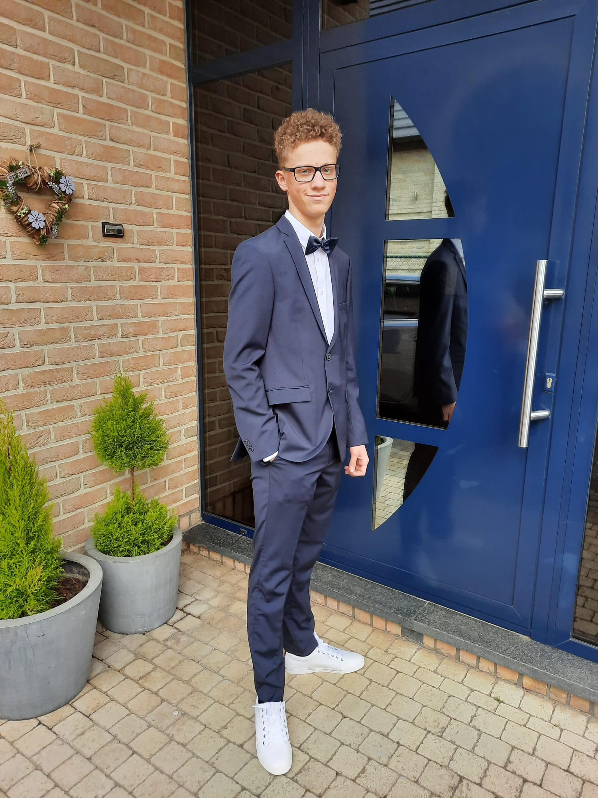

Scalable data foundations
Building pipelines, modelling datasets, integrating sources, and improving data quality for reliable analytical workloads.
Currently: Junior Data Engineer @ Agoria
I am Matteo De Moor, an AI & Data Engineering graduate turning complex data into scalable pipelines, dashboards, and intelligent solutions with Python, Microsoft Fabric, and Power BI.

Bachelor's in Applied Computer Science
Junior Data Engineer
Building pipelines, modelling datasets, integrating sources, and improving data quality for reliable analytical workloads.
Transforming raw information into clear Power BI and Fabric reporting experiences that support better decisions.
Applying machine learning and football analytics experience to projects such as match prediction and event-data exploration.